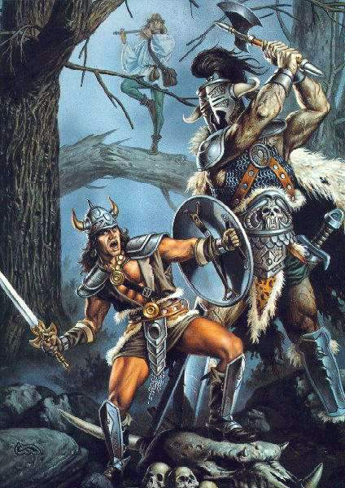
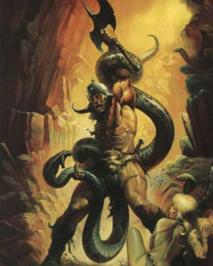

Nota di gioco: I Combattenti del Serpente possono considerarsi i paladini del Culto del Serpente. Ai fini delle regole sulle competenze nelle armi e ai fini della tavola dei punti esperienza devono considerarsi della classe Warrior-Paladin (Player's Handbook).

I
Combattenti del Serpente sono una nuova classe di personaggi
areliana. Si tratta di una classe di combattenti devoti al Culto del Serpente
che svolgono la funzione fondamentale di custodi dei riti del culto.
Costituzione
16
Intelligenza 12
Saggezza 12
Se possiede Costituzione 17, Intelligenza e Saggezza 13, riceve il 10% di punti esperienza bonus.
Razze permesse :
Umani
Serpentidi
Allineamento della classe :
Legale Malvagio
Accesso a competenze non relative alle armi :
General, Warrior
Il
Combattente del Serpente è addestrato in maniera tale da comportarsi secondo
tre dettami fondamentali ai quali non potrà mai disobbedire senza correre il
rischio di perdere il suo status.
1)
Assenza di ogni emozione
Il Combattente del Serpente che si trova nello stato di maggiore vicinanza al Dio Serpente riflette un comportamento totalmente privo di emozioni. La vicinanza spirituale e mentale del Combattente del Serpente alla propria divinità (definita con la frase "Stretto tra le spire del Serpente”) lascia il combattente in uno stato speciale di ipnosi. Nei primi anni di addestramento al Combattente del Serpente vengono somministrate particolari droghe per ridurlo in questo stato di apatia. Una volta però divenuto Combattente del Serpente l’uso delle droghe diviene unicamente necessario in casi molto particolari.
Il Combattente deve dimostrare di essere privo di ogni emozione, tanto in senso positivo (amore, gioia, allegria, umorismo, pietà, ecc…ecc…), tanto in senso negativo (odio, rancore, furia, invidia, ipocrisia, satira, ecc…ecc…). Le sue azioni sono sempre razionali e logiche, e non perde mai il controllo di sé. Conseguenza di questo stato di assenza di emozioni e sentimenti sono due, prima di tutto risulta molto difficile convincere un Combattente del Serpente a desistere dal compiere un’azione che ha intenzione di fare; in secondo luogo il Combattente del Serpente non è molto loquace, ascolta molto per poi decidere in modo tanto fermo da cambiare molto difficilmente opinione. Questo stato può subire deroghe solo quando occorre utilizzare un comportamento che rispecchi le altre peculiarità comportamentali del Combattente del Serpente (Crudeltà necessaria e Coraggio)
2)
Crudeltà necessaria
Al
Combattente del Serpente è insegnato ad essere quando
necessario di una crudeltà quasi inumana. Il Combattente deve come suo
obbligo principale fare si che tutti rispettino la chiesa del Serpente e il suo
Culto Sacro. Questo rispetto a differenza di altre religioni
si fonda sul timore e sulla paura. Quando quindi il Combattente crede di
dovere incutere timore o di dover punire chi ha in ogni maniera offeso il culto
sarà di una crudeltà incredibile e indicibile. Proprio l’unione di questo
tratto comportamentale con il precedente rende il tutto inumano, per fare un
esempio il Combattente del Serpente decide di punire un uomo che si è preso
gioco gravemente della Chiesa del Serpente, decide di sterminare i suoi figli,
si reca sul luogo e con freddezza lo fa in modo molto crudele tagliandoli con le
sue asce a pezzi, a nulla serviranno grida e pianti, non scalfiranno il
Combattente che è privo completamente di ogni emozione! Ciò non vuole dire che
il Combattente compie solo atti nefandi, ma che in ogni azione di questo tipo
dimostra una crudeltà inumana, anche nelle piccole cose. Cerca cioè di fare
sempre l’azione che maggiormente per quell’individuo sia temuta e non voluta,
sempre però proporzionalmente al risultato da ottenere o all’offesa da
ripagare.
3)
Coraggio
Il Combattente del Serpente deve affrontare la vita con coraggio, coraggio non significa spavalderia o spregiudicatezza ma ogni Combattente quando è il momento deve rischiare e se è il caso sacrificare la propria vita per il fine superiore della difesa del Culto del Serpente. Questa virtù deve essere letta anche contro gli eccessi, nel senso che mai un Combattente affronterà situazioni che apparentemente lo vedono sconfitto. Sarebbe solo un sacrificio inutile, a meno che il suo sacrificio sia richiesto da una causa fondamentale (difendere la vita del Grande Sacerdote, evitare la devastazione o sconsacrazione di un tempio del Serpente, ecc…). La vita del Combattente appartiene al Serpente, i poteri che gli sono concessi non sono personali ma sono una dimostrazione su Arelia della potenza della sua divinità, per cui non ne può disporre a piacimento.

I
POTERI E LE RESTRIZIONI DEI COMBATTENTI DEL SERPENTE
Il
Combattente ha un particolare legame con la divinità, questo legame non ha il
suo fondamento tanto nella devozione al culto e negli altri atti esteriori come
per i chierici ma nello stesso spirito del Combattente del Serpente.
Per
questo suo stretto collegamento con la divinità il Combattente riceve dal
Serpente una serie di grandi poteri che nessun altro essere vivente potrebbe
ottenere nella propria vita senza fare spendere alla divinità stessa moltissimo
potere. Per questo si dice che il Combattente si trova in un particolare status di vicinanza alla divinità che si dice trovarsi “nelle
spire del Serpente”. Fino a quando
mantiene questo status conserva i suoi poteri ma se per qualsiasi motivo perde
lo status
li perde tutti.
Il
Serpente concede ad ogni suo Combattente i seguenti poteri :
Resistenza
mentale
Il Combattente del Serpente è immune a qualsiasi forma di Fear, inoltre è immune a tutte le magie (sia negative che positive) ed agli effetti (sia naturali che magici) che agiscano sulla propria psiche modificando il suo stato emotivo o imponendogli di compiere azioni positive che altrimenti non compirebbe. E', ad esempio, immune alla magie Dictate, Emotion Control, Magic Jar, ed ai poteri connessi, come lo sguardo del vampiro. La sua immunità non si estende, però, a tutti gli incantesimi mentali, ad esempio non lo protegge da magie che lo blocchino o lo paralizzino, come Hold Persone e Sleep, oppure da quelle che riducano la propria capacità combattiva (anche se mentali) come Hesitate e Cramps.
Aiuto
costante del proprio fato
La
divinità aiuta sempre il Combattente in ogni situazione, questo continuo e
ininterrotto aiuto della divinità si traduce in termini di gioco con un bonus
di + 2 a tutti i tiri salvezza.
Resistenza
speciale ai veleni
Il
Combattente del Serpente è immune agli effetti dei veleni di qualsiasi serpente
sia questo animale o mostruoso, inoltre ottengono un bonus di +2 ai tiri
salvezza contro qualsiasi altra forma di veleno.
Vigore
divino
A
causa dello stretto contatto del Combattente con la divinità costui diviene immune
a tutte le forme di malattia. Sono escluse la licantropia e il tocco della
mummia perché sono maledizioni che hanno effetti di malattie, mentre non potrà
subire per es.: effetti dell’incantesimo contagion.
Un
Combattente ha dunque una maggior resistenza alle forme di raffreddamento questa
però è un’arma a doppio taglio perché anche se il Combattente bagnato non
si prenderà polmoniti ecc… però se si sottopone a eccessivo freddo potrà
subire un collasso improvviso del proprio organismo e potrebbe morire
direttamente senza subire gli effetti debilitanti delle precedenti malattie.
Miracolo
della lenta guarigione
Il
Combattente del Serpente rigenera sempre
1 punto ferita in più al giorno. Questo lento rigenerare della ferite
continua fino a che il Combattente non sia completamente morto, per cui se il
Combattente va in coma questo
si stabilizza automaticamente (da 0 a –9 punti ferita)
e dopo alcuni
giorni invece di morire come gli altri si sveglierà uscendo miracolosamente dal
coma. Rigenera inoltre danni da acido o ustioni ma non ricrescono arti o pezzi
del copro che gli sono stati amputati. Se il Combattente appartiene alla razza
delle Serpentidi, oltre alla rigenerazione razziale, costui rigenererà dopo un
intero giorno di riposo (deve quindi risposare per 24 ore consecutive, anche se
non deve trattarsi di riposo totale) 6 punti ferita supplementari oltre ai 24
rigenerati normalmente (per un totale, quindi, di 30 punti ferita la giorno di
riposo).
Stretta
venefica del Serpente
La
divinità interviene attraverso le mani del Combattente permettendogli di avvelenare
con l’imposizione della mano una qualsiasi creatura. Il Combattente può
utilizzare questo potere una volta al
giorno.
L’utilizzo
avviene in questo modo, nel round di utilizzo il Combattente solo con un
pensiero riesce a cospargere la sua mano di una densa sudorazione velenosissima.
Si tratta di veleno a contatto. Se entro 3 rounds tocca una creatura la
avvelenerà. Alla fine del terzo round la mano si seccherà e l’effetto
velenoso finirà. Il Combattente deve avere la mano libera da guanti di sorta e
non può spargere il veleno su un’arma o un oggetto senza che questo perda
immediatamente ogni efficacia.
Si
tratta di un veleno da contatto il cui potere aumenta con il livello in questo
modo :
Type
:
Contact
Save
:
Nessuna modifica
Delay
:
3 rounds
Result
:
Danni in punti ferita a seconda del livello :
1° - 3°
=
6 / 12
4° - 6°
=
9 /
18
7° - 8°
=
12 /
24
9° - 11°
=
15 /
30
12° in poi
= 18 /
36
Aura
di terrore
Al 5° livello il Combattente prende il potere di ispirare paura con la sua aura di estrema malvagità e potere, può usare questo potere 1 volta al giorno. Il Combattente si dovrà concentrare come per il lancio di un incantesimo (con solo componenti vocali), il potere ha casting time 4, una volta lanciato un’aura di estremo terrore si irradierà a 360 ° gradi in tutte le direzioni dal Combattente costringendo tutte le creature che si trovino entro 15 metri dal Combattente e che siano in grado di vederlo ad effettuare un tiro salvezza contro incantesimi mentali o fuggire più rapidamente possibile (siano esse alleati o nemici, tranne altri Combattenti del Serpente, Chierici del Serpente e Vesti Azzurre o Rosse i quali siano in buon rapporto con la divinità). Le creature scapperanno al massimo movimento possibile per un numero di rounds pari al livello del Combattente del Serpente.
Combattimento
Superiore
Al 7° livello il Combattente ottiene nelle armi in cui è Maestro la possibilità di effettuare due attacchi al round (invece che 3 ogni due round), senza ottenere per questo ulteriori bonus rispetto a quelli posseduti dal grado di Maestro dei paladini.
Invocare
l’intervento divino
Al
9° livello il Combattente ottenuto ottiene dal Serpente il
potere di invocare gli incantesimi, il Combattente avrà la possibilità di
utilizzare le Sfere Maggiori che il Serpente concede ai suoi chierici. Avrà
questo potere come un chierico del Serpente del 1° livello (come punti
preghiera, massimi spell per livello ecc…) Per ogni livello successivo
migliorerà come se fosse un chierico di un livello successivo per cui al
10° lancerà spell come un priest del Serpente del 2° e così via fino al
massimo di priest del 9°. Non potrà mai arrivare però ad utilizzare
incantesimi del 5° livello di potere.
LE RESTRIZIONI DEL COMBATTENTE DEL SERPENTE
Le
armi specifiche del Serpente
Per non offuscare la propria aura divina e offendere la propria divinità il combattente non può utilizzare armi e armature che non rientrano nella tradizione millenaria del culto.
Armature:
Tutte le corazze di tessuti, la scale mail e qualsiasi armatura di scaglie (es.
corazza di pelle di drago e corazza di lizard man).
Scudi: Rotella, Scudo Medio
Armi
da Tiro: Light Crossbow,
Heavy Crossbow
Pugnali:
Machete
Asce: Battle Axe
(one handed or two handed), Hatchet, Thorwing Axe, Pick, Pick Axe
Il
rispetto delle regole di comportamento
Il Combattente del Serpente ha l’obbligo di rispettare in ogni suo atto o omissione le sue tre regole di comportamento fondamentali. Queste regole sono interpretate letteralmente non essendo ammesse altre interpretazioni se il Combattente ha qualche dubbio deve parlare con un priest per ottenere una interpretazione il più possibile conforme alla volontà divina.
L’incompatibilità
con i rappresentanti degli altri fati
Il Combattente non può frequentare per un tempo prolungato o servirsi in alcun modo dei servigi di rappresentanti (chierici, paladini e affini) di altre divinità che non siano il Serpente. Non deve inoltre porgere loro alcuno aiuto lasciandoli al destino che hanno deciso di imboccare.
Contribuzione
alla causa del Serpente
Il Combattente deve versare al proprio Gran Sacerdote di riferimento il 25% di tutti i suoi introiti lordi.
PERDITA DELLO STATUS
Qualora
il Combattente non rispetti
volontariamente o involontariamente una di queste restrizioni o commetta
involontariamente una azione o omissione contraria al culto del Serpente
perderà il suo status, ossia tutti i suoi poteri. Per riottenerli dovrà
chiedere perdono al Serpente e per mezzo di un Grande Sacerdote del Serpente
dovrà chiedere la punizione, che dovrà essere proporzionata all’infrazione e
comunque ardua per il Combattente, al
termine della missione punitiva per lo svolgimento della quale non riceverà nessun
punto esperienza potrà riottenere lo status ma mai prima di 30 giorni da quando lo aveva perso.
Se invece commette una azione od omissione contraria al culto del Serpente volontariamente perderà lo status per sempre e irrevocabilmente. Nessuna magia, missione o sacrificio potrà mai più riportarlo tra le spire del Serpente.
Il
Combattente del Serpente deve essere un giovane che per le sue speciali qualità
sia già stato investito della Veste Azzurra del Culto stesso. A questo punto
dopo anni di duri allenamenti viene se supera tutte le difficoltà (spesso
mortali), nominato dal Grande Sacerdote Combattente del Serpente. Al momento
della nomina il Combattente entra nelle
spire del Serpente. Solo un Grande Sacerdote può nominare i Combattenti del
Serpente in maniera efficace.
A
differenza delle Vesti, che sono i fedeli del Serpente e che in modo che varia
dal loro colore ne partecipano ai riti, i Combattenti non partecipano
attivamente ai riti, possono essere però sempre presenti per assorbire la
potenza divina ed intervenire se succeda qualcosa che metta in pericolo il culto
stesso (si pensi alla scoperta di infiltrati durante un rito). A differenza dei
chierici i Combattenti non presiedono ai riti e non controllano il loro corretto
svolgimento, la loro presenza è ancora più passiva, di mero osservatore. Sono
i chierici che organizzano il rito a poter intervenire per riequilibrarne lo
svolgimento, i Combattenti non possono interferire sulle scelte del chierico
organizzatore.
Nei
rapporti con i fedeli e con i chierici
i Combattenti al pari dei Chierici rivestono un ruolo esterno ad ogni Veste e si
applicano le regole basi dei rapporti fra i membri del Culto.
I Combattenti sono alle dirette dipendenze del Gran Sacerdote di cui obbediscono gli ordini. Raggiunto però il 9° livello sono sciolti da ogni vincolo anche se restano fedeli al Tempio Supremo originario. Possono però senza più commettere reato religioso non obbedire agli ordini del Gran Sacerdote e operare in piena e totale libertà, sempre rispettando le altre regole del culto.